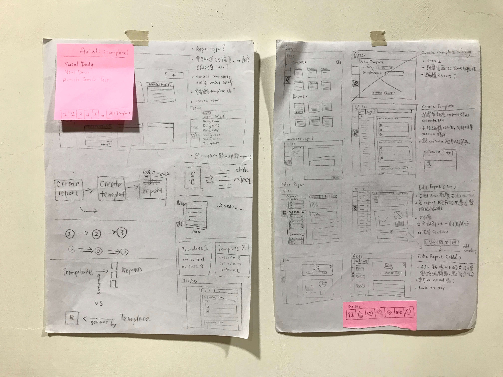
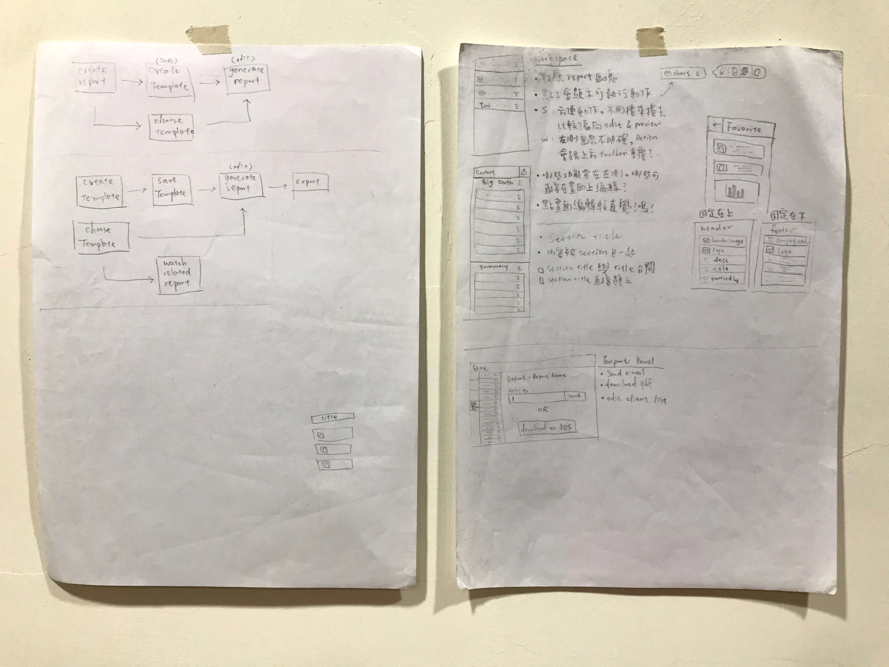
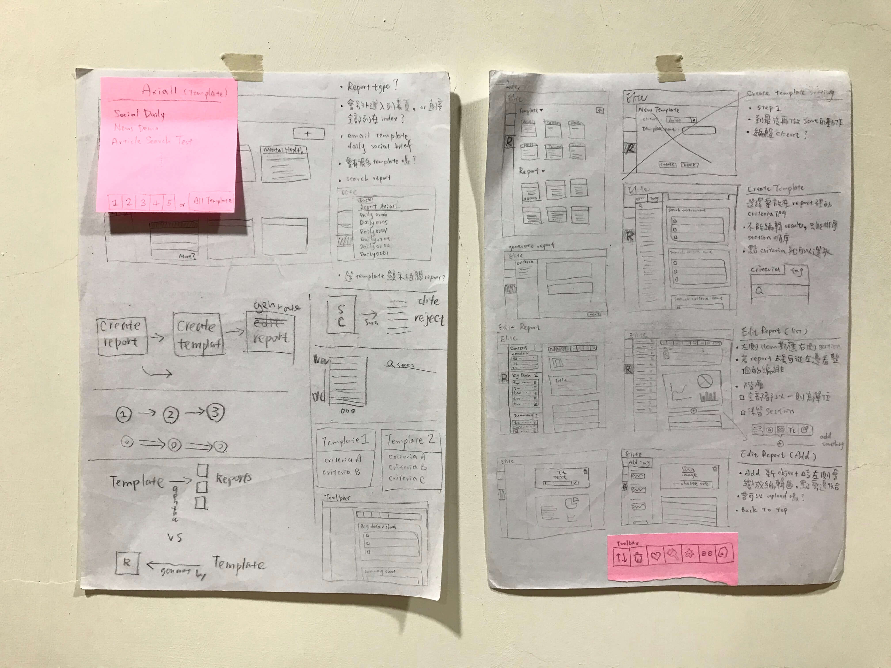
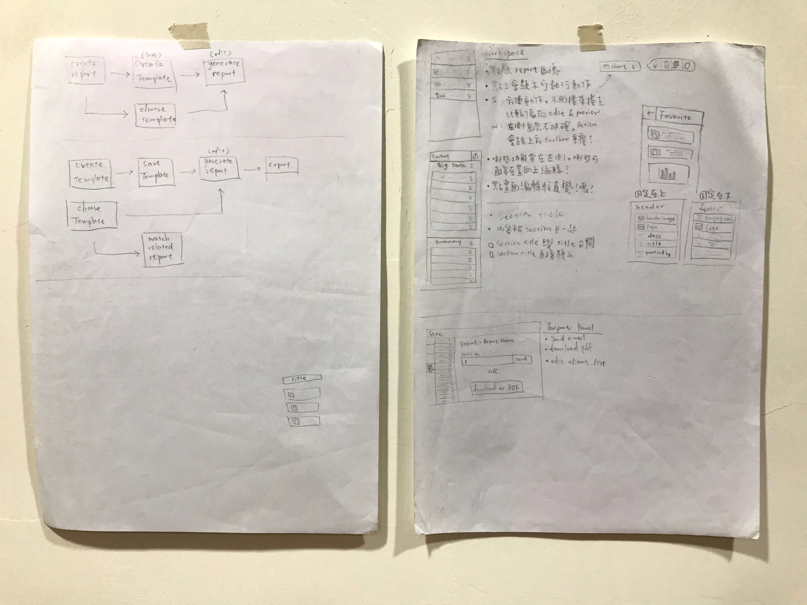
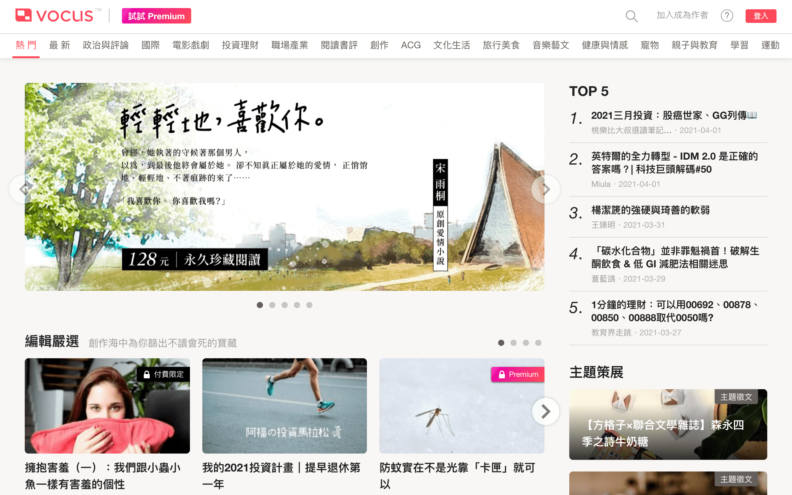
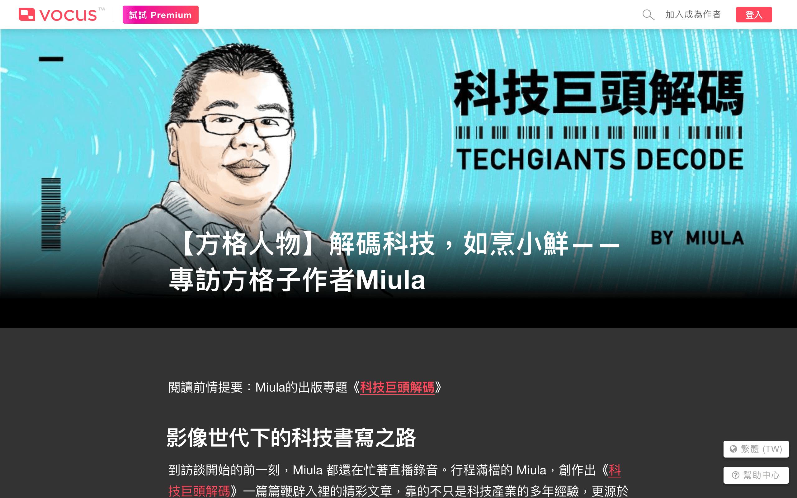
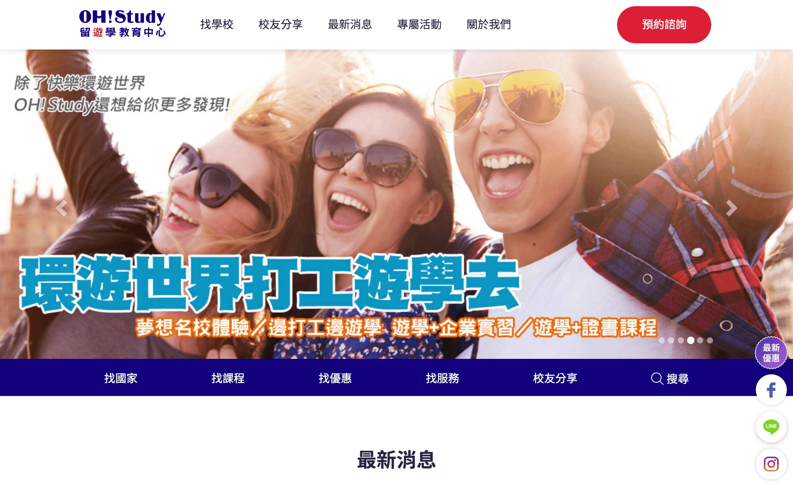
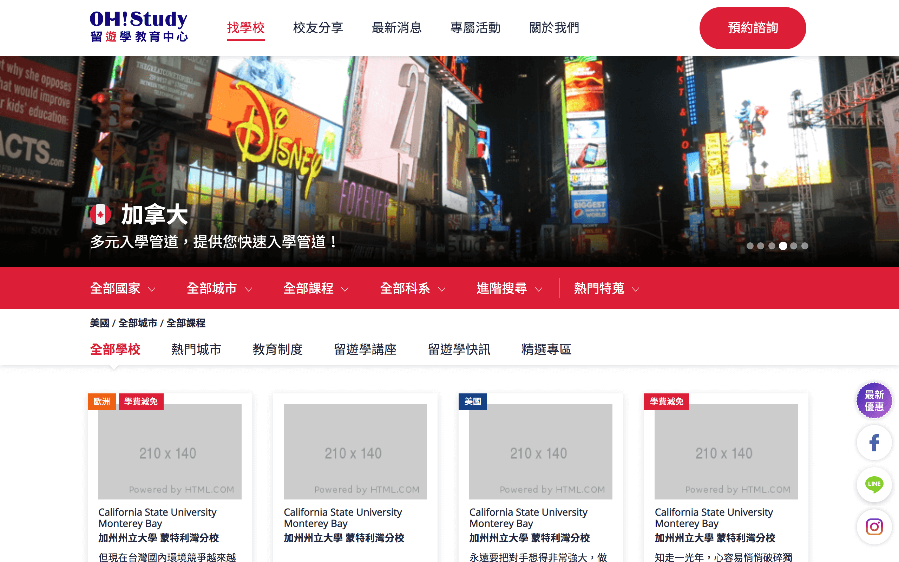
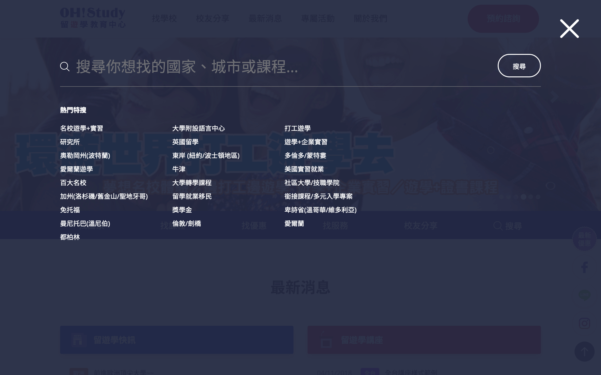

Skills
JavaScript
JQuery/React/Redux/Webpack/Babel/HighCharts/NPM
TypeScript/Jest/Next.js（只有稍微接觸過）
CSS
SCSS/Sass/RWD Layout/Styled Component
Back-end
PHP/MySQL
Version control
Git (Gitflow)/Github
Management tool
Jira/Trello/Asana/Notion
Design tool
InVision/Sketch
Nucleus
React/Redux/Webpack/babel/SCSS/Highcharts
負責前端 javascript 開發與 component 的樣式維護，使用 React 作為前端的開發框架。Nucleus 主要讓分析師能夠搜集社群媒體、新聞平台的文章與輿論風向，進一步整理成資訊做成報告寄給客戶。改善分析師整個收集資訊的工作流程，並增加製作報告的效率。公司偏向扁平式組織，每次開發都會參與需求討論，擁有跨部門的溝通經驗，並且有參與到整個產品從頭到尾的開發。


 



Report tool 在初步規劃階段的筆記，雖然不是正式的 wireframe，但幫助整理思緒、彙整跟團隊討論的資訊。
方格子 vocus.cc
React(Hook)/Redux/Styled Component/Next.js
維護現有網站，跟設計師與後端協作，討論介面迭代與功能更新。


OH!Study website
HTML/SCSS/JavaScript/jQuery/middleman/Bootstrap
這是外接的案子，主要與一位設計師一起進行，我們會透過 trello 做簡易的專案管理及溝通，我負責網頁頁面實作的規劃與切版，產出每頁需要的版型與樣式，再交付給對方的工程師串接。



Synoptos corporate site
HTML/Sass/Middleman
負責切版與一些區塊的設計。

 屋馬燒肉
屋馬燒肉
HTML/CSS
負責部分切版。